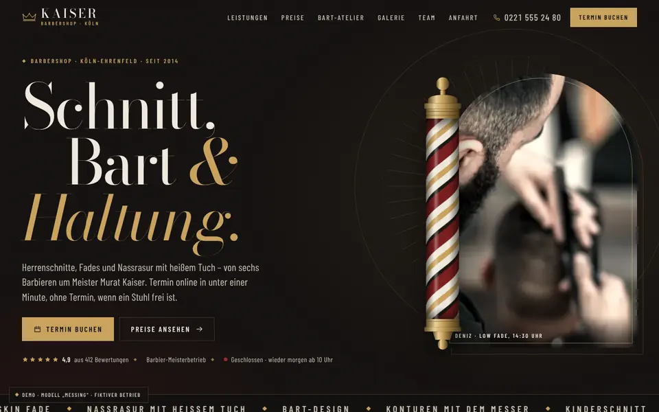
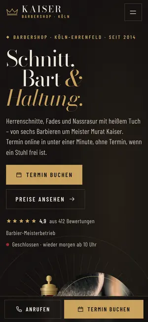

Case Study 19 / 30 · Beauty
KAISER Barbershop
Modell „Messing“
Dunkler Barbershop mit Canvas-Barber-Pole, Termin-Buchung in drei Schritten und morphendem Bart-Atelier.


Ausgangslage
KAISER ist ein erfundener Barbershop in Köln-Ehrenfeld mit sechs Stühlen. Wer so einen Laden sucht, will schnell wissen, was ein Schnitt oder eine Nassrasur kostet, wer die Barbiere sind und wann ein Stuhl frei ist. Die Seite soll den Charakter eines Ladens mit Tradition vermitteln und die Terminvergabe komplett im Browser abbilden.
Idee
Dunkel und vintage-modern: Tabak-Schwarz, Messing, Knochenweiß und ein Ochsenblut-Rot als Akzent, dazu Art-déco-Rahmen, gestufte Ecken und Fächer-Ornamente. Bodoni Moda trägt die Überschriften, Barlow Condensed in Versalien übernimmt Labels und Preise. Die Bewegung hängt an deinem Scrollen: Die Barber-Pole dreht schneller, wenn du schneller scrollst, und kurz rückwärts, wenn du nach oben gehst.
Was die Seite kann
- Barber-Pole auf CanvasHelix-Streifen werden pro Frame auf einen Zylinder projiziert, das Drehtempo folgt deiner Scroll-Geschwindigkeit und pausiert außerhalb des Viewports.
- Termin-Buchung in drei SchrittenLeistung, Barbier und Zeitslot der nächsten sieben Tage mit belegten Slots, Live-Zusammenfassung mit Preis und Dauer sowie Erfolgsansicht mit .ics-Download.
- Bart-AtelierEin SVG-Profil morpht weich zwischen Vollbart, Stoppeln, Ducktail und Schnauzer, nummerierte Barbier-Markierungen wandern mit.
- Preisliste als Art-déco-KarteHover oder Fokus auf eine Zeile zeigt Dauer und Inhalt auf einer Detailtafel, auf dem Handy klappt sie unter der Zeile auf.
- Galerie mit TrägheitDu ziehst die Bildstrecke mit der Maus, wischst auf dem Trackpad oder nutzt Pfeiltasten und Buttons, an den Rändern federt sie zurück.
- Nassrasur in vier AktenEine gepinnte Scroll-Szene erzählt den Ablauf, und „buchen“-Buttons in Leistungen, Preisen, Bart-Atelier und Team füllen die Buchung vor.
Dein Betrieb
So eine Seite für dich?
Schreib mir kurz, was du anbietest und was deine Website leisten soll. Du bekommst eine ehrliche Einschätzung, was sie kostet und was sie dir bringen kann.
Projekt anfragen